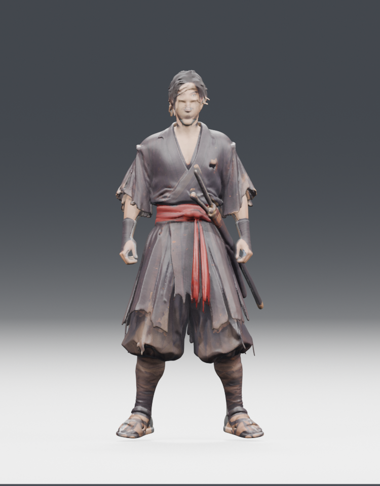
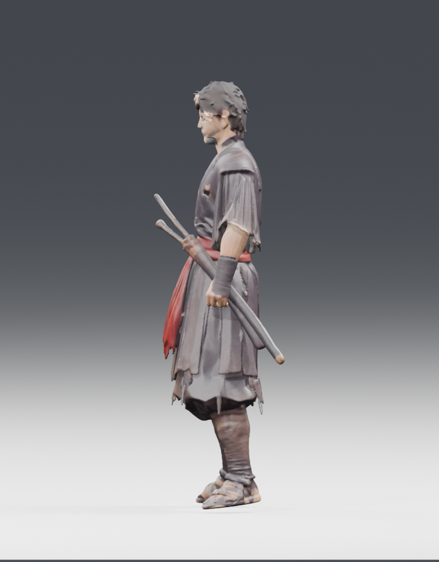
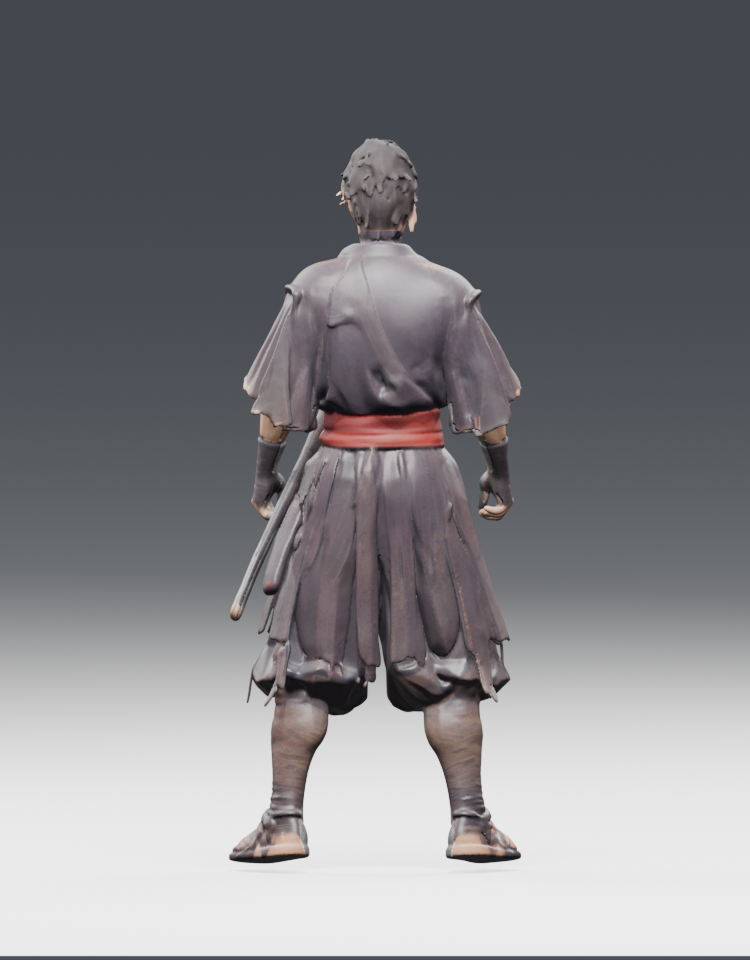
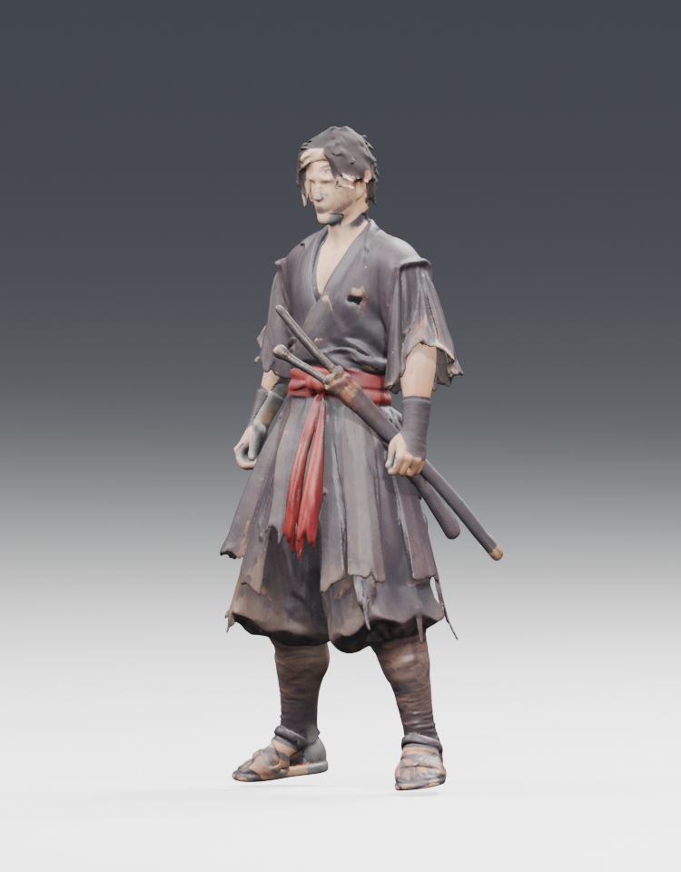

GLB 파일과 4K 텍스처는 정상입니다. 다만 얼굴이 뭉개져 있고 머리카락이 목표와 다르며, 검과 의상이 하나의 메시로 묶여 있습니다. 뼈대와 애니메이션도 없어 곧바로 격투 게임에 넣을 수 없습니다.
정점 수196,216
삼각형 수345,656
텍스처4K × 3종
골격 / 애니메이션없음 / 없음




좋은 점: 전체 체형, 검은 겹옷, 붉은 허리띠, 붕대, 짚신과 칼집의 기본 실루엣은 확보했습니다.
문제: 얼굴과 머리카락이 목표보다 크게 떨어지고, 검집이 캐릭터와 한 덩어리로 구성되어 별도 애니메이션을 바로 줄 수 없습니다. 삼각형 34.6만 개는 실시간 격투 게임용으로 최적화가 필요합니다.
원본 GLB 파일 · Blender 편집 파일 musashi_h25_imported.blend
기존 H3.1 모델은 훨씬 자연스럽지만 별도 다운로드가 필요합니다. 이 H2.5 모델을 H3.1 품질이라고 평가하지 않습니다.